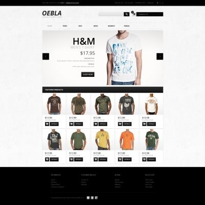

Welcome to my portfolio
These are projects I’ve built while learning computer science and programming. Each project reflects my growing skills and passion for coding. I’m continuously exploring new technologies and improving my abilities. Thank you for visiting and checking out my work!
Making Calculator Project
3D Glowing Cube Animation Project

Making Doraemon Project
Halfman Data Compression Project
Making Blog Project
Dynamic Ecommerce Website Project
